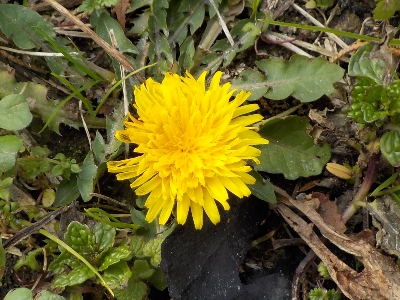
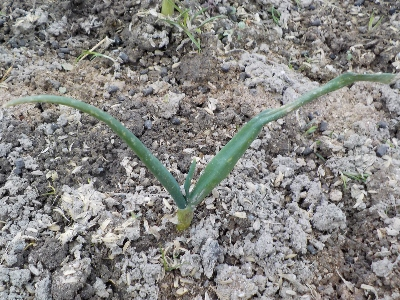

背の低いタンポポがあちこちで咲いてました。
2024/02/16

いままで気にしたことなかったですが、今の時期のタンポポって地面すれすれのところで開花するんですね。
地面に花が落ちてるみたいに見えました。小さくてかわいい。ずーっと小さいと邪魔にならなくていいのにな。
2024/02/16

いままで気にしたことなかったですが、今の時期のタンポポって地面すれすれのところで開花するんですね。
地面に花が落ちてるみたいに見えました。小さくてかわいい。ずーっと小さいと邪魔にならなくていいのにな。
2024/02/15

よその畑の玉ねぎはもっと大きいんですけど、我が家の玉ねぎはとっても小さいです。
肥料が少なかったかな？。きょうは追肥と雑草取りをしました。
あー寒かった。
過去の日記
寒い日は無理して作業しない。